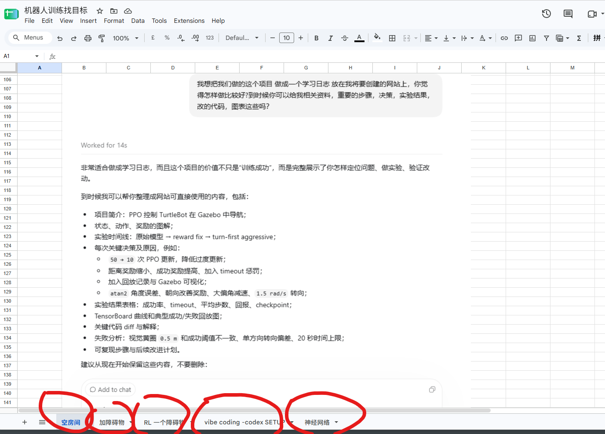
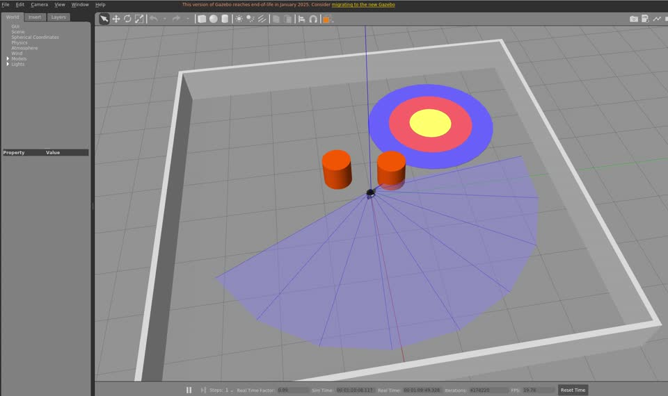

CASE FILE 001 · NAVBOT
From hitting a pillar
to learning a detour.
A hands-on robot-learning project grew into an experimental system with reproducible scenes, behavior cloning, PPO, safety layers, mirror protocols and OOD diagnostics.

00 / MY ROBOT TRAINING DESK
Start with the six interfaces I use throughout this project.
This is not fully automatic robot training. I set direction, acceptance criteria and evidence standards; the agent shortens implementation cycles. Gazebo reveals behavior and TensorBoard reveals optimization.

Keeping human judgment in control
Discuss plans, specifications, failure explanations and next steps in Windows. Preserve key questions and screenshots in Google Sheets as the original experiment record.

Where training actually runs
ROS, Gazebo, Python, source code and training run in Ubuntu. Each run preserves configuration, checkpoints, CSVs and TensorBoard events.

Inspect what the robot actually did
Gazebo turns scenes, sensors and actions into observable behavior: straight-line drift, pillar collisions, hesitation and mirrored-route consistency.

Turn a specification into code and experiments
The Codex agent works in the same WSL project to edit code, run smoke tests and collect evidence. I judge whether results are credible and what to change next.
Run training, then review behavior
Start with smoke tests, then 1k, 5k, 10k and 20k budgets. Freeze the policy for baseline, mirrored, random-obstacle and OOD evaluations. Recordings use 4× playback to compare paths and failures.

Look at the data, but don't be fooled by the curve.
Track success, collisions, timeouts, return, episode length, KL, clip fraction, actor/critic loss and parameter updates. Stable curves cannot replace Gazebo behavior validation.
These six interfaces form a repeatable Vibe Robotics loop: Question → specification → agent implementation → Gazebo run → video and TensorBoard evidence → human judgment for the next iteration.
00 / WHY THIS PROJECT
More than getting from A to B.
The goal is to complete the learning loop firsthand: observations, policy actions, rewards, trajectory collection, PPO updates and frozen evaluation of what the robot actually learned.
My background is Houdini, VFX, procedural simulation, USD and production pipelines. NavBot connects digital-world building and debugging to observations, actions, rewards, policies, rollouts and evaluation. A mobile robot makes sensing, wheel behavior and collisions directly inspectable.
01 / THE LOOP
Understand the learning loop first.
The base rule controller only moves toward the goal. PPO does not own all navigation; it supplies small Δv and Δω . Keep corrections near zero in clear space, slow and turn around obstacles, then return control to the goal controller.
If the rule controller already avoids all obstacles, PPO's contribution is obscured. Restricting it to goal seeking makes learned sensor-based avoidance testable.
02 / TWO EXPERIMENT LINES
One task, two approaches.
LINE A · RESIDUAL LEARNING
Keep the goal-tracking controller and let PPO learn obstacle-avoidance corrections.
- 16D observation; bounded velocity corrections
- Start with a fixed single column, then gradually add disturbance and OOD.
- Investigate failure mechanisms, mirror bias and safety limits
LINE B · CLEAN START
Start from random weights with temporal LiDAR and a strictly mirrored actor.
- 78D observation: current LiDAR, change rates, action history and goal geometry
- Online random scenes with 1–5 pillars and feasible-path checks
- Start with behavior cloning, then use PPO for harder failures
03 / WORKFLOW PIVOT
Real acceleration comes from redistribution of work.
Early iterations relied on copying code, screenshots and commands across windows. Moving the execution agent into WSL shortened that feedback loop substantially.
Discuss → copy → paste → run → capture → explain again
ChatGPT can be involved in analysis, but the real engineering environment is not visible. Codes and logs are manually passed back and forth, and debugging is often used to move in context rather than to the experiment itself.
Separate planning and execution, with human judgment in the loop.
Windows handles planning, specifications, analysis and next steps; the WSL Ubuntu agent reads the project, edits code, executes commands and checks results.
The efficiency gain comes from clearer roles: I define problems, protect baselines, judge tests and reject unsupported conclusions; the agent shortens implementation and execution cycles.
04 / STARTING OVER
The most important iteration was a complete redesign.
Early on, a successful one-sided route led straight into RL, without mirrored driving data or frozen acceptance criteria. Each failure prompted more rewards, conditions and geometric rules, making the system harder to explain.
Trying to speed up training, I drove too fast.
An early experiment raised the cruise command to about 0.80 m/s . The robot looked faster, but training data deteriorated. Straight-line calibration in an empty scene showed that at 0.30 m/s , lateral drift and heading error were unacceptable. The command was reduced and frozen at 0.25 m/s , repeated testing would achieve a level of stability that could be used for training.
ROBOTIS specifies about 0.22 m/s maximum translation for TurtleBot3 Burger. This test does not isolate real actuator limitations: drive, friction, slip, frequency, acceleration and model behavior may all contribute. Commands beyond a credible physics envelope make RL learn simulator artifacts rather than the intended task.
ROBOTIS TurtleBot3 official specificationsOne-sided success was mistaken for a sound learning foundation.
- Establish one feasible route to the goal
- No paired left/right mirror data
- Hand control to RL and expect it to fix the behavior automatically
- Keep adding rewards, conditions and path algorithms after unexpected results
- The system is becoming more complex and the reasons for failure are becoming more and more difficult to tell.
Validate the task and data pipeline before introducing learning.
- Redesign the controller and scene generation
- Generate a left/right mirrored pair for every base route
- Verify success with 1, 2, 3, 4 and 5 pillars before adding RL
- Freeze successful trajectories, seeds, scene-validity rules and safety thresholds
- BC pretraining, frozen-policy inference, then PPO fine-tuning
Set the learned correction to zero and confirm that the residual interface leaves the baseline unchanged.
Freeze the policy, disable exploration and optimizer updates, and test only what it has learned.
Evaluate the frozen policy in unseen scenes to test transfer and generalization, without further training.
TensorBoard added reward, episode length, success, collisions, timeouts, critic loss, KL and checkpoints to visual Gazebo observations. Frozen baseline and random-scene runs then supplied trajectories and metrics for reports. I developed the experiment sequence, settings and judgments iteratively, with AI assistance in analysis and execution.
05 / EVIDENCE NOTEBOOK
Five Google Sheet tabs form the original experiment record.
These records preserve the process, not a retrospective success story: low success rates, failed controllers, observation-space debates, migration issues and evolving test discipline.
Learning straight-line motion reveals training instability.
8 / 54stage1_timepenalty_5k showed only 14.8% success. Neighboring training snapshots even changed from 50% to 0%, illustrating why a single reward snapshot can mislead.
Create a control that must fail.
0 / 20Direct control collided in all 20 central- and double-pillar forced-detour tests, with 0 timeouts, mostly at 12–22 steps. This gives PPO a clear, falsifiable task.
View the obstacle baseline → 03 · RL with one obstacleProtect the baseline; learn only the missing capability.
10 / 10 Validated direct_goal_v1_heading_comp_v1 is frozen separately. New experiments output only bounded residual corrections. Zero residual must exactly reproduce the original straight-line baseline.
Human direction, connected to an agent execution loop.
WIN → WSLWindows handles planning and analysis; the WSL agent edits the shared project mounted into Docker for ROS/Gazebo, reducing manual command and patch transfers.
View Agent workflows 05 · Neural networksChoose dimensions for sufficient task information, not size alone.
16DEarly inputs combined LiDAR summaries, relative goals and the previous action. Later records define seed 61129, 50/50 online scene generation, 12 permanent OOD tasks and geometry-based leakage exclusion.
View Networks, Indicators and SettingsAlternate the two scene families by episode; never mix validation tasks into training.
Reject near-duplicate samples within pillar x ≤ 0.08 m, pillar y ≤ 0.06 m, goal y ≤ 0.06 m and initial yaw ≤ 4°.
Static checks and unit tests are passed; 100 scenes under fixed seed are fully reproduced.
The record matters beyond the final 29/30: why each change was made, what failed before it and what supports the next step. Google Sheets preserves original evidence; the website summarizes without combining different stages into one rising curve.
Video connects the numbers to robot behavior.
These clips are accelerated screen recordings, not real-time playback. Blue-purple sectors show LiDAR, colored rings mark goals and orange cylinders are obstacles. Each card states its playback multiplier.
06 / BUILD LOG
This project is more than a rising curve.
Ask a falsifiable question at each step before advancing to the next stage.
- 01CONTROL BASELINE
First, protect a truly functional baseline.
After restart, obstacle-free Direct Goal with heading compensation achieved 10/10 success, 0 collisions, 0 timeouts and 71.5 mean steps. Freeze and preserve this baseline.
- 02FIXED FAILURE
Make the failure unambiguous: the baseline must hit the central pillar
Start (0,0), pillar (1,0), goal (2,0). Pure goal seeking follows the centerline and terminates below 0.20 m LiDAR range. This makes failure inevitable and PPO's task explicit.
- 03RESIDUAL PPO V1–V3
A working action interface does not mean learned avoidance
Bound residual actions to ±0.05 m/s and ±0.30 rad/s; zero residual exactly reproduces baseline. After 5k steps, the first checkpoint still scores 0/10 with 10/10 collisions. Manual control establishes a feasible turn, but the learned correction is too weak.
- 04BEHAVIOR CLONING + PPO
Give the strategy an anchor for a successful action first.
Three expert trajectories yielded 648 samples; BC achieved 3/3 in Gazebo. BC-initialized PPO collected 5,299 steps with 24/24 training successes, then scored 10/10 in fixed-scene evaluation.
- 05HELD-OUT & CURRICULUM
Fixed-scene success does not establish generalization
V4 scored 59/60 across six unseen small-perturbation scenes. V5's lateral-pillar curriculum kept 59/60 while moving the failure from pillar-right to yaw-left; overall reliability did not improve.
- 06ADVERSARIAL OOD
A harder test exposes the limits
Twelve permanent OOD tasks, five deterministic runs each: V5 achieved 43/60, with 11 collisions and 6 timeouts. Its 71.67% score shows that 98.33% under small perturbations is not broad generalization.
- 07MIRROR CONSISTENCY V7
More symmetrical output, worse robots.
Mirror loss fell from 3.20 to 0.19, but permanent OOD success dropped to 38.33% and collisions rose to 48.33%. Symmetry was not enough: correct safe-action anchors and strict paired trajectories were missing.
- 08V8 + CLEAN START
Rebuild around successful mirrored trajectories
V8 collected 24 successful mirror pairs, 48 episodes and 5,617 16D samples. The later clean-start version uses dense 360° LiDAR and 78D temporal inputs, trained from random weights rather than the old actor.
07 / CLEAN-START RESULT
The lasting result is more than a success rate.
PPO converted two difficult four-pillar timeouts into successes at 160/161 steps without adding timeouts. BC and PPO still both hit the 0.20 m safety threshold in the same mirrored five-pillar scene. Better performance has not eliminated the key safety failure.

From Gazebo learning and diagnostics to reusable Blender scenes, NavBot became SimForge Agent's first real robot asset source.
08 / WHAT I LEARNED
The difficult part is defining the evidence.
Training success ≠ generalization
Report fixed scenes, small perturbations and adversarial OOD separately. Held-out 59/60 and OOD 43/60 are both valid results for different tests.
Failure requires a trajectory, not just a label.
A timeout may mean no progress or overshooting near the goal. Per-step goal angle, velocity, gate state and LiDAR distinguish these mechanisms.
Symmetric constraints require the right action anchor
Making the output more consistent, on the right and on the left, is not automatically safer. Without a pair of success tracks, symmetrical losses may even damage the otherwise useful side.
Simulation infrastructure is also the subject of research.
Cached targets, leftover pillars across processes and gzclient/gzserver disagreements can corrupt training signals. Reset protocols and server-side checks are part of the experiment.
10 / WHERE IT GOES NEXT
Connect the learning loop to the wider robotics portfolio.
Before extending training, investigate repeated safety failures. Then connect procedural Houdini/Blender worlds, USD assets, sensors and batch evaluation into one inspectable pipeline. Agents help build assets; humans remain responsible for protocols and conclusions.
Sources: three NavBot/PPO archives from September 2026 and WSL experiment READMEs, frozen evaluations and final reports. Keep training, held-out and OOD statistics in their original contexts.